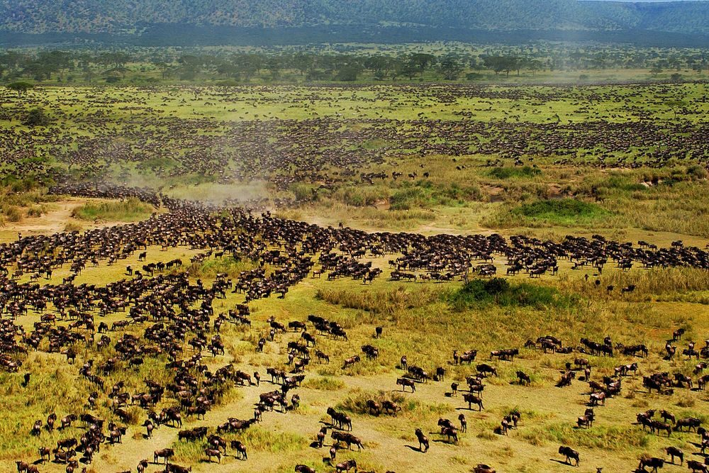
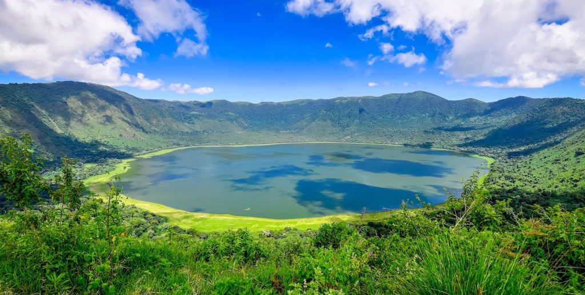
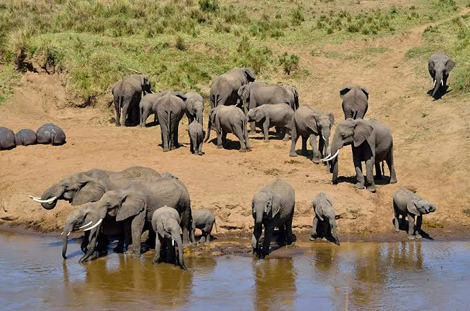
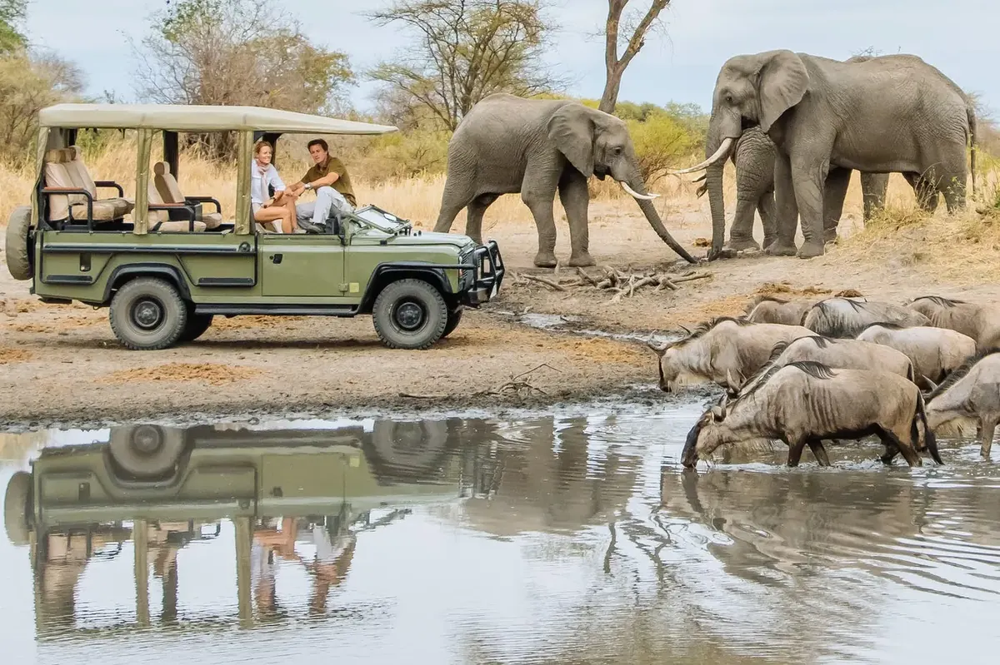
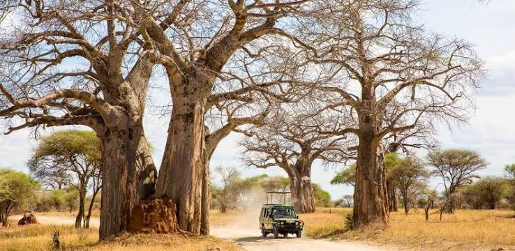
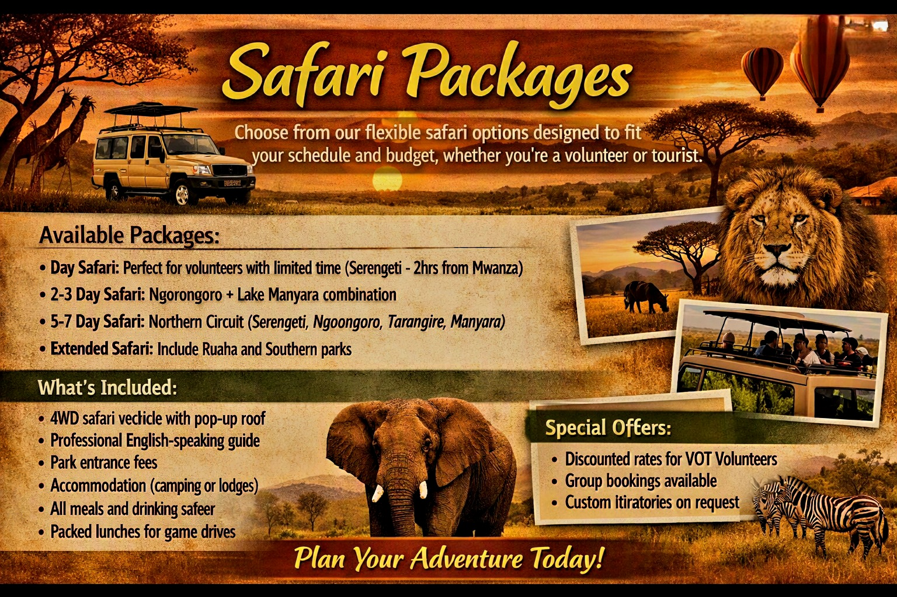

Tanzania National Park Safaris
Experience the greatest wildlife spectacles on Earth - from the Great Migration to the Big Five

Serengeti National Park
Recognized as one of the 'Seven New Wonders of the World', Serengeti National Park is globally renowned for the spectacular wildebeest and zebra migration.
Wildlife Highlights:
- The Big Four (Lion, Leopard, Elephant, Buffalo)
- Over 500 bird species unique to the region
- Cheetahs, hyenas, and various reptiles
- Spectacular wildebeest and zebra migration
- Big cats in their natural habitat
Trip Details:
- Just 2-hour drive from Mwanza
- Perfect for day trips or extended safaris
- 4WD safari vehicle with expert guide
- Packed lunches, breakfasts, and beverages available
- Best visited: June-October (dry season)

Ngorongoro Crater
The world's largest inactive volcanic caldera, often called the "Eighth Wonder of the World". A UNESCO World Heritage Site teeming with wildlife.
What Makes It Special:
- 610 sq km crater floor with 25,000+ large animals
- Best place to see the Big Five in one day
- Rare Black Rhino population
- Maasai cultural experiences
- Stunning crater rim viewpoints
Wildlife You'll See:
- Lions, elephants, buffalos, leopards
- Black and white rhinos
- Hippos in Lake Magadi
- Flamingos and over 400 bird species
- Hyenas, cheetahs, and wild dogs

Tarangire National Park
Famous for its massive elephant herds and ancient baobab trees, Tarangire offers an authentic safari experience with fewer crowds.
Park Highlights:
- Largest elephant population in Tanzania
- Iconic ancient baobab trees (1000+ years old)
- Tarangire River - wildlife magnet in dry season
- High concentration of wildlife June-November
- Excellent bird watching (550+ species)
Best For:
- Elephant photography enthusiasts
- Those seeking quieter safari experience
- Landscape and tree photography
- Walking safaris available
- Night game drives

Lake Manyara National Park
A compact park famous for tree-climbing lions, flamingos, and diverse ecosystems from groundwater forests to alkaline lake shores.
Unique Features:
- Famous tree-climbing lions
- Thousands of pink flamingos (seasonal)
- Lush groundwater forest with baboons
- Hot springs with hippos
- Canoeing safaris on the lake
Wildlife & Activities:
- Elephants, giraffes, buffalos
- Over 400 bird species
- Tree-climbing lions (rare behavior)
- Night game drives
- Walking safaris outside park

Ruaha National Park
Tanzania's largest national park, offering wild, untouched landscapes and one of Africa's last great wildernesses.
Park Features:
- 10,300 sq km of pristine wilderness
- Great Ruaha River - lifeline for wildlife
- Largest elephant population in Tanzania
- 10% of world's lion population
- Rare wild dogs and sable antelope
Best For:
- Adventure seekers
- Photography enthusiasts
- Those avoiding crowds
- Walking safaris
- Extended safari experiences

Safari Packages
Choose from our flexible safari options designed to fit your schedule and budget, whether you're a volunteer or tourist.
Available Packages:
- Day Safari: Perfect for volunteers with limited time (Serengeti - 2hrs from Mwanza)
- 2-3 Day Safari: Ngorongoro + Lake Manyara combination
- 5-7 Day Safari: Northern Circuit (Serengeti, Ngorongoro, Tarangire, Manyara)
- Extended Safari: Include Ruaha and Southern parks
What's Included:
- 4WD safari vehicle with pop-up roof
- Professional English-speaking guide
- Park entrance fees
- Accommodation (camping or lodges)
- All meals and drinking water
- Packed lunches for game drives
Special Offers:
- Discounted rates for VOT volunteers
- Group bookings available
- Custom itineraries on request
Ready for Your Safari Adventure?
Whether you're a volunteer with a free weekend or a tourist exploring Tanzania, we'll arrange the perfect safari experience for you.
Book now and witness Africa's greatest wildlife spectacles!
Book Your Safari Now